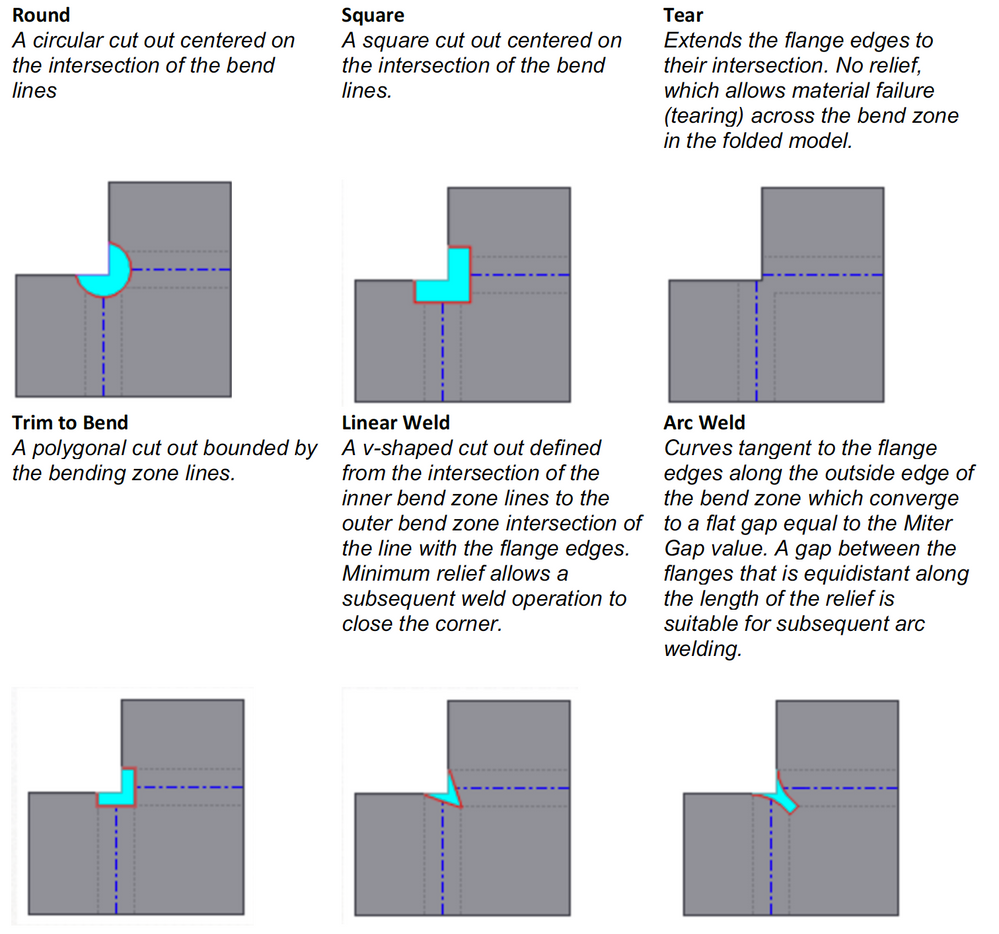

## Sheet Metal
This page will cover sheet metal techniques needed to make enclosures, including:
- Drafting in Fusion 360
- Cutting on water jet
- Bending with sheet metal brake
- Welding with a spot welder
- More advanced techniques
### Drafting in Fusion 360
It's important to know that it is possible to fold and weld your design with the tools we have available. It's usually worthwhile to print your pattern and cut it out of posterboard (or lasercut it), and go through the folding steps needed to make sure it can be done (i.e., many bends cannot be done because of collisions with the brake).
Fusion allows you to select different types of corners:

### Cutting on water jet
### Bending with sheet metal brake
There are a number of resources for learning the classic sheet metal techniques, such as [this Instructables](https://www.instructables.com/Sheet-Metal-Box-1/) and corresponding [video](https://www.youtube.com/watch?v=XtiYADl3PEo)
- Fold edges over to avoid sharp edges
### Welding with a spot welder
### More advanced techniques